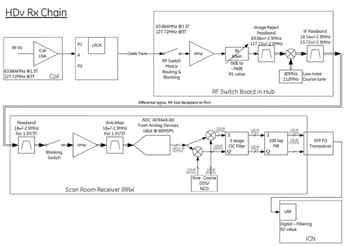
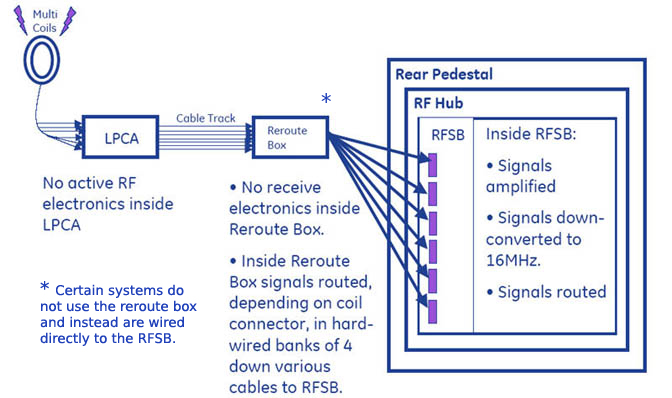
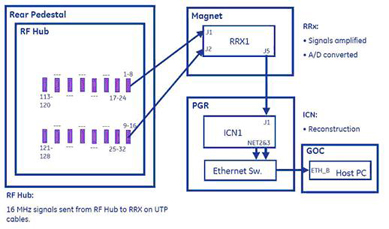
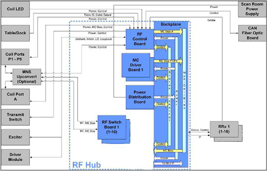

Proprietary to General Electric Company
Direction 5670006, Rev# 1
Discovery MR750w GEM Service Methods
Module Version 7.0, Version Date 10/12/11
Proprietary to General Electric Company |
The following describes Receive Chain Theory.
The Receive chain takes the low-level analog signal from the MR coils starting at the Coil Connectors (A-Port, P1, thru P4, and Body) to the RF Switch Board in the RF Hub where it is amplified and the R1 value is selected by Auto Prescan. The signal then goes through a mixer module where it is converted to a usable Intermediate Frequency. The IF is approximately 16 MHz. This IF signal is converted to a differential Analog signal to be passed up to the receiver, which is then amplified and is converted into a digital signal, decimated and filtered. The Digital data via a SFP Fibre Optic transceiver is sent to the VRF Board within the VRE Chassis. The VRF does more digital filtering and adjusts the R2 Gain stage. The VRE then reconstructs the data into an image, transfers it over Ethernet to the GOC where it is displayed on the operator monitor.
Illustration 1: DV ReceiveChain

MR signals are nominally 127.72 Mhz for 3.0T and 63.86 Mhz for 1.5T. All coils used in DV Systems must have their own internal preamps. There are no preamps in the LPCA. The only exception is the body coil which still uses the gold box external preamp. All coils also must have their own Coil ID chip to be read by the RFCB.
16-channel systems use one RFSB, while 32-channel systems use two.
The RF Hub contains:
For any RFSB, the board’s main function is to route and down convert up to 96 input MR signals to 16-channel IF receivers. The RFSB interfaces to MR coils through the coil interface ports and a gain stage. Once the signals reach the RFSB, they are routed according to system configuration, and subsequently down-converted to the desired Intermediate Frequency. Finally, the signals are routed to 16-channel IF receivers.
Routes contiguous banks of four input signals from 16W16 RF connectors to a contiguous group of four available IF receivers. The banks of contiguous signals is defined starting with the first connector pin as (1,2, 3, 4), (5, 6, 7, 8), etc.
Amplifies and down converts MR RF signal to 16MHz differential IF frequency signal.
Combines each MC bias from MC driver Boards to the RF input connector center pin.
Provides signal loopback path required for receive chain diagnostics.
Buffers input from transmit energy to protect sensitive receive hardware during transmit portion of scan.
Monitors RRx status for real-time error messaging and diagnostics.
The Multi-Coil Driver Board (MCDB) is to provide DC Bias for protecting sensitive receive circuitry from high RF power during transmit and to couple RF signals during receive. Receive coils contain decoupling circuitry which require DC bias to control PIN diode circuits in the multi-coil arrays to achieve this functionality.
16-channel systems use one MCDB board. 32-channel systems use two.
The RF Control Board's (RFCB) main function is to provide control and diagnostic information for the RF Hub assembly and related interfaces. The RFCB also provides multi-coil (MC) bias to the legacy coil port A and preamp bias to the body coil.
Reads and validates Coil ID.
Controls Transmit Switch.
Distributes Local Oscillator.
Provides input for loopback signal from DTX-1 Exciter for RF Hub Loopback Diagnostic.
Provides fiber optic connection for CAN Link.
Reports MCBias faults to the system, generated either locally on RFCB or from MCDB board.
Power Distribution Board (PDB) in the Rear Hub gets its main DC Power from the Scan Room Power Supply. The function of the PDB board is to regulate and monitor the various DC Supply voltages and disperse the VDC to the RF Hub backplane to be used by the other boards. The PDB also contains the Power switch for the Rear Hub. You can use this switch to turn off Power to the Rear Hub to remove all boards except the PDB. To remove the PDB, you must turn off the SRPS.
The Remote Receiver’s (RRx) main function is to provide analog and digital signal processing and A/D conversion for 16 channels of data.
16 Bit Analog to Digial conversion
Digitial Decimation and filtering
Communications to/from RF Hub
Control of TDM module and notching of data
The Transient Detection Module (TDM) is responsible for transferring DC Power from the Scan Room Power Supply to the Receivers. The TDM also detects transient RF noise spikes (white pixels) and communicates to the receiver when a spike occurs. Data suppression is done in the Receiver, not the TDM. The TDB also provides 80 MHz clock distribution.
Illustration 2: Signal Flow from Coils to Rear Hub

Illustration 3: Signal Flow from Rear Pedestal to GOC

Illustration 4: RF Hub Data Flow
